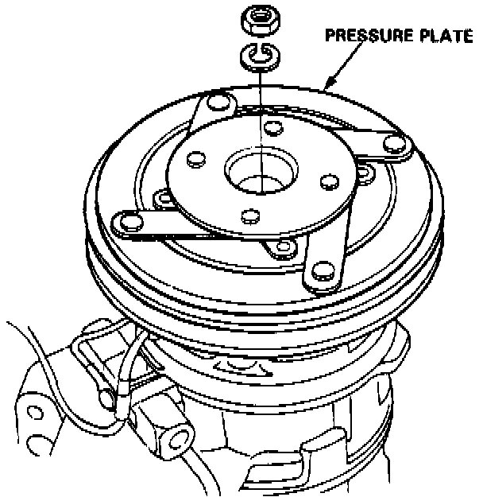
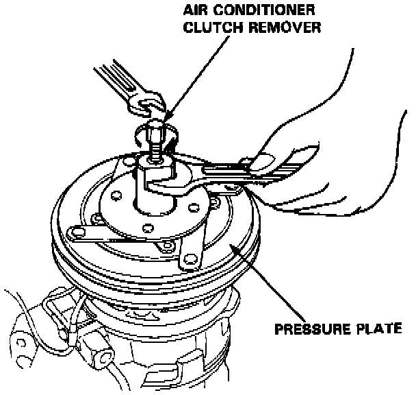
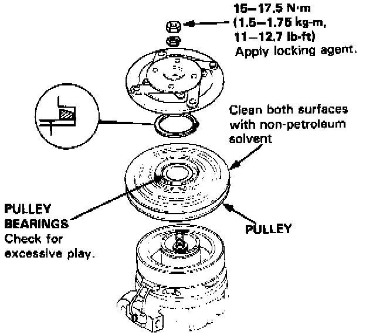
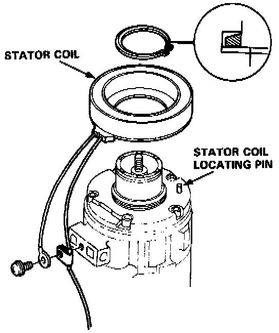

Compressor Clutch: Service and Repair
Compressor Clutch Overhaul
1. Remove the nut and spring washer while holding the pressure plate.

2. Thread the air conditioner clutch remover tool into the pressure plate and remove the pressure plate by screwing in the center bolt.

3. Use circlip pliers to take the circlip off and remove the pulley from the shaft with a 2 or 3 jaw puller.

4. Remove the stator coil by removing the large circlip.